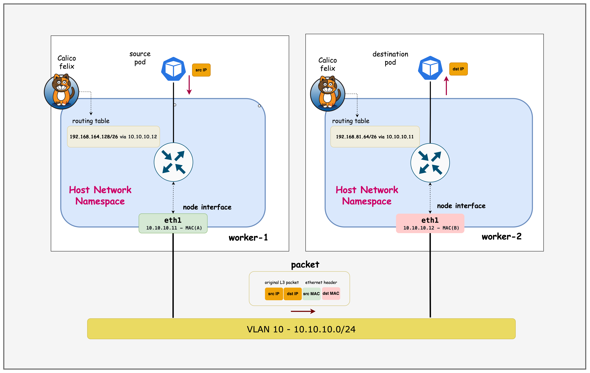
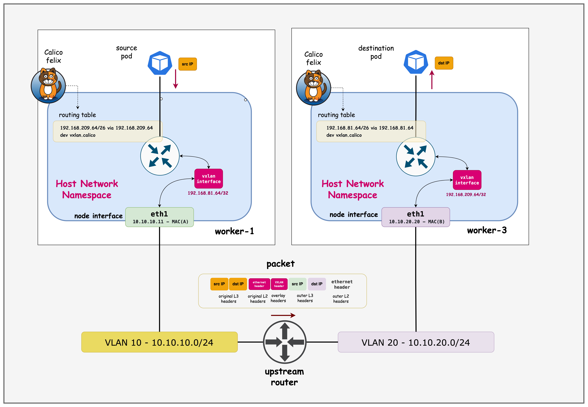

没有 Overlay
192.168.209.64/26 ?
underlay 路由器需要知道每个节点后的 Pod CIDR，否则它无法把原始 Pod 包送到目标节点。
Lesson 06 · Calico · VXLAN CrossSubnet
同一子网保留直接路由，跨越三层边界时再套上 VXLAN，把 Pod 网络建立在现有 underlay 之上。
Why an overlay exists
192.168.209.64/26 ?
underlay 路由器需要知道每个节点后的 Pod CIDR，否则它无法把原始 Pod 包送到目标节点。
10.10.10.11 → 10.10.20.20
underlay 只转发节点 IP。Pod 包藏在 VXLAN 外层，目标节点解封装后再交给 Pod。
CrossSubnet 只在跨越子网边界时封装，减少同子网流量的额外开销。
One route lookup, two outcomes
远端 Pod block 经目标 Node 的 eth1 地址到达。
远端 Pod block 的下一跳是远端 VTEP，设备为 vxlan.calico。
containerlab/06-calico-overlay
| 文件 | 内容 | 演示重点 |
|---|---|---|
topology.clab.yaml | cEOS、Kind 与 ext-container 链路 | 节点 underlay 地址和静态路由 |
k01-no-cni.yaml | 4 节点 Kind，关闭默认 CNI | node-ip 固定到 10.10.x.x |
custom-resources.yaml | Calico Installation 与 IPPool | VXLANCrossSubnet、/26 block |
ceos01-startup-config.config | VLAN 10、VLAN 20 与 SVI | 两个节点子网的三层网关 |
deploy.sh / destroy.sh | 部署与清理 | cEOS 镜像、Calico 3.30.0 |
环境提醒：cEOS 4.34.0F 需要用户自行从 Arista 下载，仓库不会分发该镜像。
Physical view
这里的“同子网”和“跨子网”比较的是 Node underlay 地址，不是 Pod IP 是否来自同一个 IPPool。
ContainerLab wrapper
k01-worker:
kind: ext-container
exec:
- ip addr add dev eth1 10.10.10.11/24
- ip route add 10.10.20.0/24 via 10.10.10.1ext-container 不会再创建一台节点，它包装已经存在的 Kind 容器，让 ContainerLab 可以追加接口和启动命令。
k01-no-cni.yaml
networking:
disableDefaultCNI: true
podSubnet: 192.168.0.0/16
serviceSubnet: 10.96.0.0/16
nodeRegistration:
kubeletExtraArgs:
node-ip: 10.10.10.11节点先 NotReady，等待 Calico 安装。
Calico 节点地址与课程的 eth1 underlay 对齐。
.10、.11、.12 位于 VLAN 10，.20 位于 VLAN 20。
show interface status
| 端口 | 连接对象 | VLAN | 状态 |
|---|---|---|---|
| Et1 | k01-control-plane | 10 | connected |
| Et2 | k01-worker | 10 | connected |
| Et3 | k01-worker2 | 10 | connected |
| Et4 | k01-worker3 | 20 | connected |
docker exec -it clab-calico-overlay-ceos01 Cli
ceos> enable
ceos# show interface statusshow ip interface brief / route
Interface IP Address Status
Vlan10 10.10.10.1/24 up/up
Vlan20 10.10.20.1/24 up/up
C 10.10.10.0/24 via Vlan10
C 10.10.20.0/24 via Vlan20
C 172.20.20.0/24 via Management0节点跨 VLAN 时，把外层 IP 包交给各自网关。
课程输出没有默认路由，cEOS 只负责已连接网段。
交换机无需学习 192.168.x.x，跨子网 Pod 包已经封装。
Course topology

VLAN 10 内节点可以直接互达，worker3 位于 VLAN 20，跨子网 Pod 通信使用 VXLAN。
cEOS, Kind, Calico
docker import ... ceos:4.34.0Fcontainerlab deploykind get kubeconfig --name=k01operator + custom resources脚本等待 TigeraStatus 中 apiserver 与 calico 的 Available=True。
课程仓库脚本安装 Calico 3.30.0，页面示例 Kind 镜像为 v1.32.2。
First verification
$ containerlab inspect topology.clab.yaml
k01-control-plane running 172.18.0.2
k01-worker running 172.18.0.5
k01-worker2 running 172.18.0.3
k01-worker3 running 172.18.0.4
ceos01 running 172.20.20.2$ export KUBECONFIG=$(pwd)/k01.kubeconfig
$ kubectl get nodes -o wide
k01-control-plane Ready 10.10.10.10
k01-worker Ready 10.10.10.11
k01-worker2 Ready 10.10.10.12
k01-worker3 Ready 10.10.20.20ContainerLab 的 172.x 管理地址与 Kubernetes Node InternalIP 是两套地址，分析数据面时使用 10.10.x.x。
calico-cni-config/custom-resources.yaml
calicoNetwork:
ipPools:
- name: default-ipv4-ippool
blockSize: 26
cidr: 192.168.0.0/16
encapsulation: VXLANCrossSubnet
natOutgoing: Enabled
nodeSelector: all()
disableBGPExport: true
nodeAddressAutodetectionV4:
cidrs:
- 10.10.0.0/16只封装跨节点子网流量。
Calico IPAM 按 /26 block 分给节点。
只从 10.10.0.0/16 选择节点地址。
同一清单还创建 APIServer、Goldmane 和 Whisker；Overlay 数据面参数集中在 Installation.spec.calicoNetwork。
kubectl get ippools
$ kubectl get ippools default-ipv4-ippool -o yaml
spec:
allowedUses: [Workload, Tunnel]
assignmentMode: Automatic
blockSize: 26
cidr: 192.168.0.0/16
disableBGPExport: true
ipipMode: Never
natOutgoing: true
nodeSelector: all()
vxlanMode: CrossSubnetPool is global, blocks are per node
Block Affinity 表示某个 IPAM block 归哪个节点管理。它不是 Kubernetes Node.spec.podCIDR 的同义词。
blockaffinities
kubectl get blockaffinities -o=jsonpath='{range .items[*]}{.metadata.name}{"\t"}{.spec.node}{"\t"}{.spec.cidr}{"\n"}{end}'| 节点 | 课程示例 Pod block | underlay 子网 |
|---|---|---|
| k01-control-plane | 192.168.23.64/26 | 10.10.10.0/24 |
| k01-worker | 192.168.81.64/26 | 10.10.10.0/24 |
| k01-worker2 | 192.168.164.128/26 | 10.10.10.0/24 |
| k01-worker3 | 192.168.209.64/26 | 10.10.20.0/24 |
Encapsulation and encryption
| 选项 | 主要作用 | underlay 要求 | 典型开销 |
|---|---|---|---|
| None | 保留原始 Pod IP 路由 | underlay 必须学习 Pod 路由 | 最低 |
| IP-in-IP | IPv4 包套在 IPv4 包中 | 允许 IP 协议 4 | 约 20B |
| VXLAN | 二层帧套入 UDP 隧道 | 节点间允许 UDP 4789 | IPv4 常见约 50B |
| WireGuard | 加密节点间工作负载流量 | 允许 UDP 51820/51821 | 取决于协议族 |
术语修正：WireGuard 主要提供加密，可以与路由或封装方案组合使用，不应简单归类为 VXLAN/IP-in-IP 同类的封装模式。
Route table tells the story
两条路由都由 Calico 维护。区别在于下一跳是 underlay Node IP，还是 vxlan.calico 上的远端 VTEP。
docker exec k01-worker
# ip route | grep /26
192.168.23.64/26 via 10.10.10.10 dev eth1 proto 80 onlink
blackhole 192.168.81.64/26 proto 80
192.168.164.128/26 via 10.10.10.12 dev eth1 proto 80 onlink
192.168.209.64/26 via 192.168.209.64 dev vxlan.calico onlinkworker to worker2
抓 eth1 时看到原始 Pod 源/目的 IP。
目标 block 路由的下一跳是 10.10.10.12。
Same subnet reference

目标 Pod block 经 10.10.10.12 和 eth1 转发，不经过 vxlan.calico。
docker exec k01-worker2
# ip route | grep /26
192.168.23.64/26 via 10.10.10.10 dev eth1 proto 80 onlink
192.168.81.64/26 via 10.10.10.11 dev eth1 proto 80 onlink
blackhole 192.168.164.128/26 proto 80
192.168.209.64/26 via 192.168.209.64 dev vxlan.calico onlink正向和反向路径都应成立。worker2 返回 worker 时同样选择 10.10.10.11 dev eth1。
Virtual Tunnel Endpoint
# ip addr show vxlan.calico
vxlan.calico:
mtu 1450
state UNKNOWN
link/ether 66:fb:ad:98:aa:13
inet 192.168.81.64/32课程示例使用本节点 IPAM block 的首地址 /32。
neighbor 表把远端 VTEP IP 映射到远端 VXLAN MAC。
为 IPv4 VXLAN 外层预留约 50 字节。
worker to worker3 block
# ip route | grep 192.168.209.64
192.168.209.64 dev vxlan.calico scope link
192.168.209.64/26 via 192.168.209.64 dev vxlan.calico onlinkNode in VLAN 20
# ip route | grep /26
192.168.23.64/26 via 192.168.23.64 dev vxlan.calico onlink
192.168.81.64/26 via 192.168.81.64 dev vxlan.calico onlink
192.168.164.128/26 via 192.168.164.128 dev vxlan.calico onlink
blackhole 192.168.209.64/26 proto 80worker3 独自在 10.10.20.0/24，因此到 VLAN 10 上三个节点的 Pod block 都需要跨子网封装。
Encapsulate, route, decapsulate
外层目的地址是 worker3 的 Node IP，内层目的地址始终是 Pod B。解封装不会改变原始 Pod 五元组。
Cross-subnet reference

源节点封装，cEOS 只转发外层 Node IP，目标节点解封装并交付 Pod。
Packet anatomy
IPv4 VXLAN 常见 workload MTU 为 1450。
小包正常，大包丢失、重传或依赖分片。
Linux forwarding chain
Pod CIDR → remote VTEPVTEP IP → VXLAN MACVXLAN MAC → Node IPNode IP → gateway / eth1Calico/Felix 预编程这些静态条目，内核无需广播 ARP 或通过动态 MAC 学习寻找远端 VTEP。
ip neighbor show
# ip neighbor show | grep vxlan
192.168.81.64 dev vxlan.calico lladdr 66:fb:ad:98:aa:13 PERMANENT
192.168.164.128 dev vxlan.calico lladdr 66:c7:4d:6e:6b:f3 PERMANENT
192.168.23.64 dev vxlan.calico lladdr 66:15:9d:fa:c6:aa PERMANENTbridge fdb show
# bridge fdb show | grep 66:fb:ad:98:aa:13
66:fb:ad:98:aa:13 dev vxlan.calico dst 10.10.10.11 self permanentNeighbor 与 FDB 配合完成两次映射：VTEP IP → VTEP MAC → Node underlay IP。
Evidence on both interfaces
tcpdump -ni vxlan.calico
inner src: 192.168.81.x
inner dst: 192.168.209.x验证原始 Pod 包进入隧道设备。
tcpdump -ni eth1 udp port 4789
outer src: 10.10.10.11
outer dst: 10.10.20.20验证外层 Node-to-Node VXLAN 包。
同子网测试时，eth1 上应看到原始 Pod IP，而不是 UDP 4789。跨子网测试才应看到 VXLAN。
Find the first missing fact
| 现象 | 优先检查 | 命令 | 常见原因 |
|---|---|---|---|
| 节点 NotReady | Calico 状态与 node-ip | kubectl get tigerastatus; kubectl get nodes -o wide | 地址自动检测错误、CNI 未就绪 |
| 同子网 Pod 不通 | 远端 block 的 eth1 路由 | ip route | grep /26 | Node IP、VLAN、主机防火墙 |
| 仅跨子网不通 | VTEP、UDP 4789、cEOS 路由 | ip link; tcpdump -ni eth1 udp port 4789 | 端口被拦、SVI/静态路由错误 |
| 有 VXLAN 路由但不发包 | neighbor 与 FDB | ip neigh; bridge fdb show | Felix 编程缺失、映射不一致 |
| 小包通、大包失败 | MTU 与分片 | ip link show vxlan.calico; ping -M do -s SIZE | 嵌套封装、路径 MTU 偏小 |
顺序：先确认 Node underlay，再看路由选择，最后检查隧道映射和包是否真正离开接口。
From topology to packet evidence
containerlab inspect topology.clab.yaml确认 Kind 与 cEOS 容器。kubectl get nodes -o wide核对 10.10.10.x 与 10.10.20.20。show interface status / show ip route验证 VLAN 与 SVI。kubectl get ippools default-ipv4-ippool -o yaml确认 CrossSubnet。kubectl get blockaffinities ...记录四个 /26。docker exec -it k01-worker bash查看 /26 路由。ip addr show vxlan.calico确认本地 VTEP。ip neigh show dev vxlan.calico核对远端 MAC。bridge fdb show dev vxlan.calico核对远端 Node IP。tcpdump -ni eth1 udp port 4789生成跨子网流量并观察。清理：运行 ./destroy.sh，确认 topology、Kind cluster、容器、网络与 kubeconfig 的删除范围后输入 yes。
Summary and sources
VLAN 10 与 VLAN 20 提供 Node IP 可达性。
同子网选择 eth1，跨子网选择远端 VTEP。
Route、neighbor 与 FDB 合成 UDP 4789 外层包。